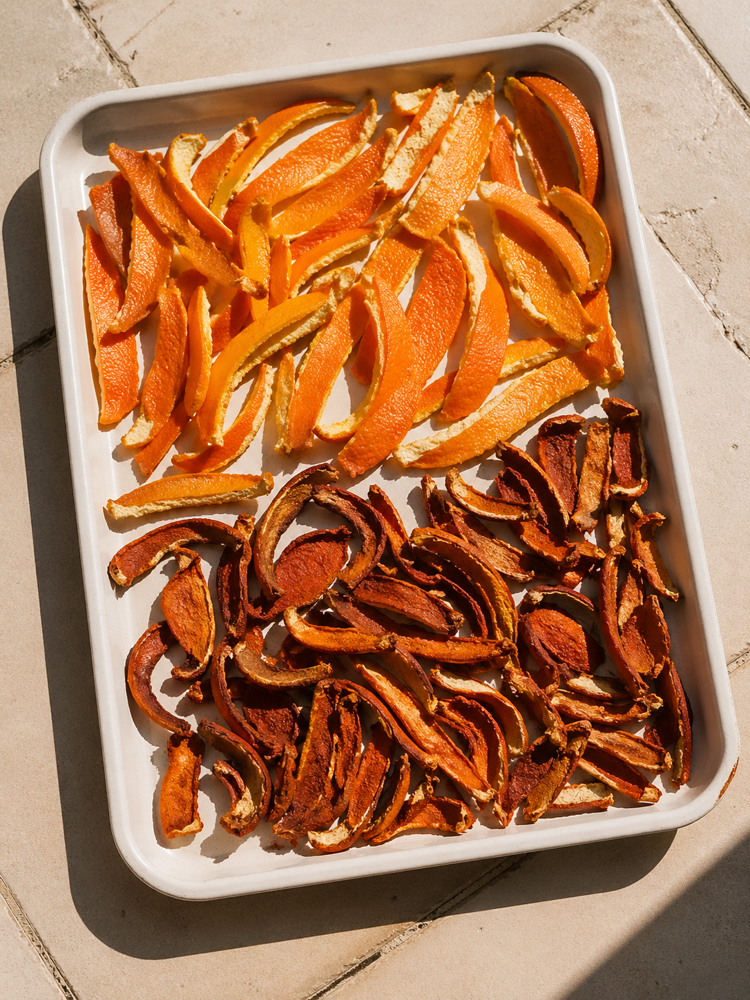
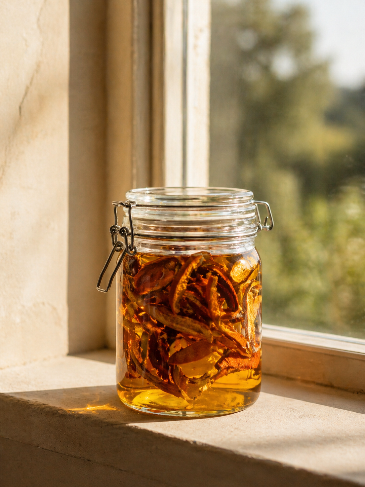
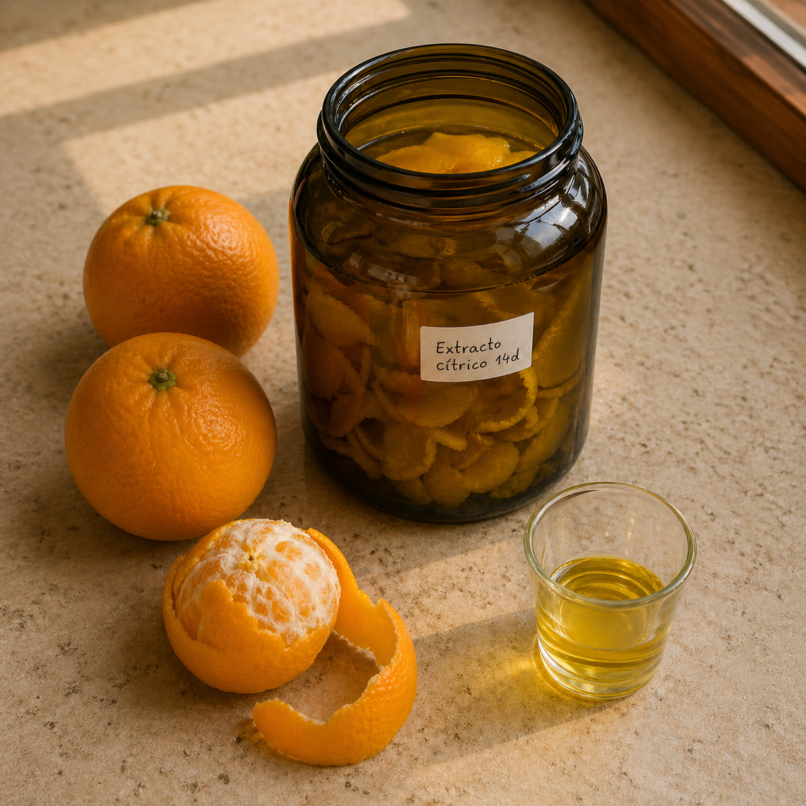
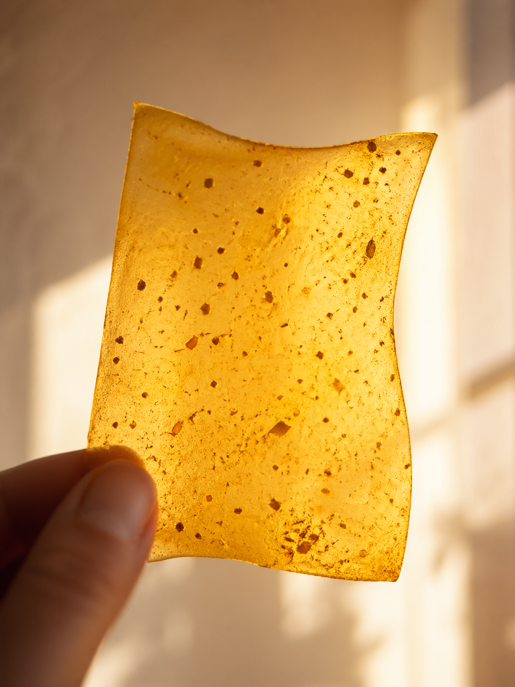

España produce cada año 5,8 millones de toneladas de cítricos, y por cada naranja que se vuelve zumo, otra mitad acaba en una bolsa de basura. Solo en la Comunidad Valenciana eso son más de 600.000 toneladas de cáscara al año. Y el precio que paga la frutería de tu barrio por deshacerse de ella es exactamente cero.
Para una artesana o un artesano que trabaja con color, con materia o con aroma, esa cifra es una invitación. La cáscara de cítrico es uno de los residuos más versátiles que circulan por las ciudades españolas: tinta amarilla, aceite cosmético, limpiador desengrasante, lámina bioplástica, papel rugoso para encuadernar.
En esta guía te enseño cinco caminos verificados para convertir esa cáscara en pieza, en color o en herramienta para tu oficio. Todo desde tu cocina o tu taller.
Por qué hablar de cáscara cítrica ahora
España es el primer productor europeo de cítricos. La campaña 2024/25 cerró con 5,8 millones de toneladas; la 2025/26, según el Ministerio de Agricultura, será la más baja en 16 años. Pero el residuo no baja con la cosecha: cada tonelada de naranja que entra en la planta de zumo deja 500 kilos de subproducto — corteza, pulpa, semillas — que en la mayoría de talleres y bares acaban en el contenedor de orgánica o, peor, en el de resto.
Mientras tanto, dos cosas están pasando a la vez.
Por un lado, la Ley 1/2025 de Prevención de las Pérdidas y el Desperdicio Alimentario —en vigor con sanciones desde abril de 2026— obliga a una jerarquía clara de uso del residuo agroalimentario: primero consumo humano, después alimentación animal o energía, y solo al final compostaje. La cáscara de cítrico, por su perfil, encaja perfectamente en el segundo escalón... o en el primero, si la transformas tú.
Por otro lado, el mercado tira: el sector global de tintes naturales mueve ya 4.750 millones de dólares al año (CAGR 5,5%), y el textil sostenible va camino del billón. El cliente — joven y mayor — está buscando piezas con trazabilidad de materia, no solo de hilo.
La paradoja es que muchos talleres siguen comprando colorantes industriales mientras tiran al contenedor la materia prima que pone en valor su pieza. Vamos a darle la vuelta.
Antes de empezar: la cáscara que sí, la cáscara que no
No toda cáscara sirve para todo. La mayoría de cítricos no ecológicos llegan a la frutería tratados con dos cosas: ceras (carnauba, shellac) y fungicidas sistémicos como el imazalil y el tiabendazol. Tests del Environmental Working Group detectaron estos compuestos en aproximadamente el 90% de las muestras de cítricos no ecológicos. Las agencias regulatorias los consideran seguros bajo ingesta diaria admisible, pero cuando hablamos de un aceite que vas a aplicar sobre la piel o un tinte para una prenda que tocará el cuerpo, la regla es otra.
| Uso de la cáscara | Cáscara obligatoria |
|---|---|
| Tintes textiles (prendas que tocan piel) | 🟢 Ecológica |
| Aceite infusionado, jabón, cosmética | 🟢 Ecológica sin excepción |
| Extracto de limoneno (limpiador) | 🟡 Convencional aceptable |
| Bioplástico decorativo, papel cítrico | 🟡 Convencional aceptable |
| Pectina experimental no alimentaria | 🟡 Convencional aceptable |
Dónde conseguirla gratis: fruterías de barrio con zumería propia (la mejor fuente — kilos diarios), bares y cafeterías de zumo natural, restaurantes de cocina mediterránea o italiana, mercados municipales al cierre, asociaciones vecinales y colegios en zonas citrícolas, y tu propia cocina si acumulas durante 1-2 semanas. Lleva tu propio recipiente y explica el proyecto: nadie tira algo así si entiende qué va a hacer con ello.
Los 5 caminos para revalorizar tu cáscara cítrica
Camino 1 — El amarillo cítrico: tinte sobre lana, seda y algodón

Cáscara secada al sol durante 7-14 días: la oxidación libera un baño mucho más oscuro.
La cáscara de naranja contiene flavonoides (hesperidina, narirutina) y carotenoides residuales que tiñen la fibra de un amarillo que va del paja al ocre claro. Solidez moderada — no compite con la cebolla ni la cúrcuma — pero ideal para chales, hilos de bordado, foulards y cualquier pieza que no se lave a diario.
Cómo se hace en 4 pasos
- Mordenta tu fibra: 15% de alumbre sobre el peso de fibra para lana o seda; para algodón o lino, primero tanino (8% WOF) y después alumbre (15%) + soda ash (3%). Sin mordentado, el color se va al primer lavado.
- Cuece la cáscara: 200-300 g de cáscara troceada por cada 100 g de fibra, en agua suficiente para que la fibra se mueva. Hierve suave 1 hora.
- Cuela y tiñe: devuelve el líquido al baño a 80-90°C, sumerge la fibra mojada y mantén 1 hora removiendo cada 15 min.
- Reposa: deja enfriar dentro del baño toda la noche. Escurre, enjuaga, seca a la sombra.
Truco que cambia el resultado: la cáscara secada al sol durante 7-14 días oxida sus polifenoles y libera un baño mucho más oscuro — ocre profundo en lugar de amarillo paja. Si quieres profundidad, no uses cáscara fresca.
Oficios donde encaja: tejido a punto, hilatura, bordado, encuadernación textil, joyería textil, marquetería, cestería (sobre fibra mordentada).
Caso referente: Orange Fiber lleva esta lógica a escala industrial desde Sicilia. Adriana Santanocito y Enrica Arena fundaron la marca en 2014; en 2017 firmaron una cápsula con Salvatore Ferragamo, en 2019 entraron en H&M Conscious Exclusive, y en 2021 se aliaron con Lenzing para hilar las primeras fibras Tencel Lyocell de naranja. La pulpa cítrica les permite reducir presión sobre los bosques. La idea — sacar fibra de un residuo descartado — empieza en la cáscara que tú tienes en la cocina.
| Fibra | Sin modificar | Con vinagre | Con hierro |
|---|---|---|---|
| Lana | Amarillo paja cálido | Amarillo más limpio | Verde-gris musgo |
| Seda | Amarillo dorado suave | Amarillo cítrico vivo | Oliva ahumado |
| Algodón mordentado | Beige amarillento | Amarillo apagado | Gris verdoso |
| Lino mordentado | Crudo amarillento | Amarillo paja | Gris cálido |
| Viscosa mordentada | Amarillo tenue | Amarillo medio | Verde grisáceo |
Camino 2 — El ocre tabaco: cáscara seca para tonos profundos
Misma técnica del camino 1, pero usando cáscara que ha pasado mínimo 7 días al sol o deshidratada en horno a 50°C. La oxidación enzimática multiplica taninos y polifenoles disponibles. El resultado es un baño más intenso y un color final más estable: del ocre cálido al marrón "tabaco".
Por qué funciona: los taninos extraídos se unen mejor al alumbre del mordentado, lo que se traduce en mayor solidez. La cáscara seca también se conserva 6-12 meses en frasco hermético, así que puedes acumular durante meses y teñir cuando te venga bien.
Variante clave: doble extracción. Hierve cáscara, cuela, vuelve a hervir nuevas cáscaras en el mismo líquido, cuela. El baño concentrado da tonos casi marrón cuero sobre lana.
Oficios donde encaja: cestería (esparto, mimbre desbastado, rafia tras mordentado), patchwork con paletas otoñales, cordelería decorativa, encuadernación con telas de cubierta.
Caso referente: Favini Crush, la papelera italiana que desde 2012 fabrica un papel premium con hasta un 15% de residuos agroindustriales. Su variante cítrica — fibra cítrica + pulpa reciclada — la usan encuadernadores y diseñadores de packaging en toda Europa. El papel tiene una textura visible, una calidez de tono que ningún papel virgen iguala, y la trazabilidad como argumento. La misma lógica que aplicas en tu baño de tinte: el residuo no se esconde, se enseña.
Camino 3 — Aceite infusionado: aroma cítrico para jabón y cosmética

Aceite infusionado en maceración solar: 2-4 semanas extrayendo limoneno, linalol y citral.
No es aceite esencial — eso requiere alambique de destilación o prensado en frío industrial. Es aceite infusionado: aceite portador (girasol alto oleico, almendra dulce, jojoba) que ha extraído los componentes liposolubles de la cáscara durante 2-4 semanas en maceración solar. Limoneno, linalol, citral, flavonoides liposolubles. Concentración baja, pero suficiente para jabones aromatizados, bálsamos labiales y aceite corporal.
Cómo se hace en 4 pasos
- Frasco completamente seco (la humedad enrancia el aceite). 50 g de cáscara seca ecológica ocupando 1/3 del frasco.
- Cubre con 200 ml de aceite portador dejando al menos 2 cm por encima de la cáscara.
- Maceración: 2-4 semanas en lugar templado, agitando una vez al día. Atajo: baño maría a 50-60°C durante 2-3 horas.
- Cuela con muselina, filtra una segunda vez con filtro de café, trasvasa a frasco oscuro.
Aviso crítico de fototoxicidad. Los aceites cítricos infusionados contienen furanocumarinas (bergapteno, oxipeucedanina) que provocan reacciones fototóxicas: enrojecimiento, ampollas e hiperpigmentación que puede durar meses, con efecto pico a las 36-72 horas. No apliques aceite infusionado en piel expuesta al sol durante las 12-18 horas siguientes. La directriz IFRA limita bergapteno a <15 ppm en productos "leave-on". En jabones y geles que se aclaran no hay riesgo. Si vas a vender cosmética artesanal, asesórate con un técnico cosmético antes de formular.
Oficios donde encaja: jabonería artesanal (añadir el infusionado en la fase aceite del proceso), bálsamos labiales con cera de abeja, aceite corporal cítrico para invierno, acondicionado de cuero vegetal.
Caso referente: la regulación IFRA-IOFI (la International Fragrance Association) ha endurecido en sus últimas enmiendas los límites de bergapteno en productos cosméticos, justo por el riesgo fototóxico. Los talleres que formulan jabón cítrico desde hace años conviven con esta normativa y declaran ingredientes en INCI completo. Si haces jabón con cáscara casera, la trazabilidad es tu protección.
Camino 4 — Extracto de limoneno: el limpiador artesanal y la base para aromaterapia

Extracto de limoneno: 14 días en alcohol etílico, uno de los desengrasantes naturales más eficaces.
200 g de cáscara fresca + 200-300 ml de alcohol etílico (vodka 40° o etanol 96°) en frasco cerrado durante 14 días. El alcohol extrae el D-limoneno y otros compuestos solubles, y queda una tintura cítrica intensa que es uno de los limpiadores desengrasantes naturales más eficaces que existen.
Cómo se hace en 4 pasos
- Trocea cáscara fresca en tiras finas (más superficie, mejor extracción). Si pelas, descarta el albedo blanco — da extracto amargo.
- Llena el frasco hasta la mitad de cáscara, cubre con alcohol justo lo necesario para superar 1 cm.
- Cierra herméticamente y guarda en lugar oscuro y fresco. Lejos de fuego — esto es inflamable. Agita una vez al día.
- Tras 14 días, cuela con muselina, filtra con filtro de café, trasvasa a frasco de vidrio oscuro etiquetado claramente: "Extracto cítrico — alcohol — INFLAMABLE".
Cómo usarlo: 100 ml de extracto + 400 ml de agua + 1 cucharada de jabón potásico líquido en un pulverizador → limpiador desengrasante para cocina, baño y encimeras (no usar en mármol o piedra porosa). Aplicado puro retira pegatinas y adhesivos en 5 minutos. Diluido 1:10 con agua y un chorrito de jabón es repelente de hormigas y áfidos en jardín.
Oficios donde encaja: ceramistas, joyeros, talleres de bici, encuadernadores y cualquiera que trabaje con grasa o residuos pegajosos. Marcas de productos de limpieza artesanales que quieran una base más eficaz que el vinagre.
Caso referente: PeelPioneers, fundada en los Países Bajos en 2017, procesa 120.000 kg de cáscara cítrica al día en su planta de Den Bosch — el equivalente a llenar una piscina olímpica diaria. Su nueva planta en construcción procesará 30 millones de kilos al año en 2027 y 150 millones en 2030. En enero de 2026, la española CEAMSA adquirió su línea de fibra. Y proyectan una planta en la Región de Murcia. La tesis de PeelPioneers — ningún kilo de cáscara debería desperdiciarse — empieza en el frasco de alcohol que tú puedes montar esta semana.
- Frasco de vidrio oscuro, etiquetado "Extracto cítrico — alcohol — INFLAMABLE"
- Almacenado lejos de fuego, hornos, cigarrillos
- Ventilación adecuada al manipular
- Nunca aplicar puro sobre la piel — diluir siempre
- Nunca mezclar con lejía u otros oxidantes
- Etiqueta con fecha de elaboración + lote
Camino 5 — Bioplástico y papel cítrico: la cáscara que se vuelve material

Lámina de bioplástico cítrico: pectina + glicerina + ácido cítrico. Biodegradable en suelo en 21 días.
Aquí cierras el bucle entero. La cáscara cítrica contiene pectina (sobre todo en el albedo, la parte blanca interior), un polisacárido que combinado con glicerina vegetal y ácido cítrico forma una lámina translúcida, flexible, ámbar — biodegradable en suelo en ~21 días, en agua en ~14. Y la pulpa que queda tras hacer zumo, mezclada con agar-agar y glicerina, da un papel rugoso color marrón-anaranjado perfecto para encuadernación y packaging.
Cómo se hace el bioplástico (lámina A5)
- Disuelve en frío 2 g de pectina en 100 ml de agua removiendo con varillas (sin grumos). Añade 7 g de glicerina vegetal y 1 g de ácido cítrico.
- Calienta a 80-85°C con termómetro. NO hervir. Mantén 5-10 min removiendo hasta que veas un gel translúcido y brillante.
- Vierte sobre molde de silicona o papel sulfurizado y extiende fino con espátula (1-2 mm).
- Seca 24-48 horas a temperatura ambiente, lugar ventilado y sin polvo. Despega.
Cómo se hace el papel cítrico (hoja A4): hidrata 5 g de agar-agar en 100 ml de agua 10 min, lleva a fuego suave hasta disolver, añade 5 g de glicerina y 100 g de pulpa cítrica triturada, mezcla, vierte sobre tamiz forrado con tela y deja secar 24-48 h.
Cómo trabajar la lámina después: se corta con tijeras o cúter, se cose a mano (mejor humedecida), se imprime con sello de goma + tinta acrílica al agua, y se pega con cola blanca o soldando con plancha a baja temperatura sobre papel sulfurizado.
Oficios donde encaja: etiquetas colgantes biodegradables de cerámica, joyería y jabonería; tarjetas de visita troqueladas; sobres de packaging single-use; cubiertas decorativas de libros artesanales; abalorios y broches experimentales; embalaje rústico para entregas.
Casos referentes — cuatro proyectos españoles trabajando ya esta materia
- Squeeze The Orange / Citra (Barcelona). Susana Jurado, Elisenda Jaquemot y Nuria Bonet, dentro del programa Remix el Barrio del Fab Lab Barcelona, desarrollaron un biocuero cítrico que fue candidato al James Dyson Award 2021. Trabajaron con restaurantes del Poblenou para cerrar bucles de barrio.
- AIMPLAS / Citruspack (Valencia y Aragón, coordinado por AITIIP). Proyecto europeo que sacó tres prototipos validados en compostabilidad industrial: una biobotella de zumo, un biotarro cosmético y una crema facial hidratante con base de residuos cítricos.
- BUILD-LIMONENE (Comunidad Valenciana). AIMPLAS + Zumesa + UPV investigan materiales de construcción con cáscara cítrica + CO₂.
- VEGANCELIO (Comunidad Valenciana). AIMPLAS + Tejidos Royo desarrollan piel vegana textil de residuos orgánicos.
Cuatro proyectos españoles. La misma materia prima que tú tienes en la cocina.
¿Quieres las recetas completas con ratios exactos y troubleshooting?
Descárgate gratis la guía Cítricos: tintes, aceites y biomateriales paso a paso desde tu cocina o taller. 14 recetas verificadas con fuentes científicas, mapeadas a oficios artesanales concretos, listas para aplicar este mismo mes.
Descargar guía gratuita →Casos en España y Europa que ya cierran el bucle
🇳🇱 PeelPioneers
120.000 kg/día. Proyecta planta de 30M kg/año en 2027 y 150M kg/año en 2030. En enero 2026 CEAMSA adquirió su línea de fibra. Anuncian planta en Murcia. Modelo de biorrefinería 100% circular.
🇮🇹 Orange Fiber
Fundada 2014. Primera fibra textil del mundo de pulpa cítrica. Colaboraciones con Salvatore Ferragamo (2017), H&M Conscious (2019), Lenzing/Tencel Lyocell (2021).
🇪🇸 Squeeze The Orange / Citra
Proyecto de Remix el Barrio + Fab Lab Barcelona (Susana Jurado, Elisenda Jaquemot, Nuria Bonet). Biocuero cítrico candidato al James Dyson Award 2021.
🇪🇸 AIMPLAS / Citruspack
Coordinado por AITIIP. Tres prototipos validados en compostabilidad industrial: biobotella de zumo, biotarro cosmético, crema facial. Financiado por la Comisión Europea con seis socios europeos.
🇪🇸 BUILD-LIMONENE + VEGANCELIO
Dos proyectos AIMPLAS. El primero, materiales de construcción con cáscara + CO₂ junto a Zumesa y UPV. El segundo, piel vegana textil con Tejidos Royo.
🇮🇹 Favini Crush
Papel premium con hasta 15% residuos agroindustriales. Variante cítrica usable por encuadernadores y diseñadores de packaging españoles. Disponible desde 2012.
Lo que estos seis casos enseñan: la cáscara cítrica admite escala industrial, escala atelier y escala doméstica. Y todas las escalas necesitan a la artesana o el artesano que sepa hacer el primer prototipo.
5 errores comunes que arruinan el resultado
-
Usar cáscara convencional con fungicidas para piezas que tocan piel. Imazalil y tiabendazol están en aproximadamente el 90% de los cítricos no ecológicos. Para tintes textiles, aceites infusionados y cualquier cosmética, la cáscara debe ser ecológica o sin tratar. Para limpiadores y bioplásticos decorativos, la convencional sirve.
-
Saltar el pre-mordentado con tanino al teñir algodón o lino. Las fibras celulósicas necesitan dos pasos: primero tanino (8% WOF) y después alumbre (15% WOF). Sin tanino, el color se va al primer lavado. Es la diferencia entre un taller serio y un experimento de fin de semana.
-
Aplicar aceite infusionado de cítrico antes de exposición solar. Las furanocumarinas provocan fototoxicidad: ampollas, hiperpigmentación que dura meses. 12-18 horas de margen mínimo. En productos que se aclaran (jabones), no hay riesgo.
-
Hervir el bioplástico. La pectina se degrada por encima de 90°C. Termómetro de cocina obligatorio: 80-85°C, removiendo. Sin termómetro, la lámina sale frágil o no cuaja.
-
Vender "teñido natural" sin entender la solidez del color. Los pigmentos cítricos son moderados: aceptables para chales y bordados, no para prendas de uso diario que se lavan a 40°. Decir la verdad sobre la solidez te diferencia de las marcas que lo esconden.
Tu hoja de ruta para integrar la cáscara cítrica en 4 semanas
Semana 1 — Fuente de cáscara y secado
Visita 3 fruterías o bares de barrio. Explica el proyecto, deja recipiente, recoge a primera hora. Acumula 1-2 kg. Empieza un secado al sol (5-10 días) y otro en horno a 50°C (6-8 h). Conserva en frasco hermético.
→ Resultado: una reserva de cáscara seca lista para los siguientes baños.
Semana 2 — Tu primer baño de tinte sobre lana
Mordenta 50 g de lana con alumbre 15% WOF. Cuece 100 g de cáscara fresca y tiñe. Documenta en tu cuaderno de laboratorio: temperatura, tiempo, fibra, resultado.
→ Resultado: tu primera muestra de amarillo cítrico real, comparable a la teoría.
Semana 3 — Aceite infusionado o extracto de limoneno (uno de los dos)
Si vas a cosmética/jabonería, monta el aceite en girasol alto oleico — 2-4 semanas de maceración. Si vas a limpieza o aromaterapia, monta el extracto en alcohol — 14 días.
→ Resultado: un primer producto líquido propio, etiquetado, fechado y trazable.
Semana 4 — Tu primera lámina de bioplástico
2 g pectina, 100 ml agua, 7 g glicerina, 1 g ácido cítrico. Cuece a 80-85°C, vierte fino sobre molde, seca 48 h.
→ Resultado: una etiqueta colgante biodegradable que adjuntar a tu pieza con un cordel.
Al final del mes: un sistema cítrico vivo en tu taller — color, aroma y materia desde la misma materia prima local. Una historia que contar a tu cliente.
Ayudas y programas que puedes pedir
| Programa | Territorio | Importes orientativos |
|---|---|---|
| PERTE Economía Circular | Estatal | 492M€ totales, hasta 1.200M€ movilizados a 2026 |
| CMIART — Inversiones artesanas | Comunidad Valenciana | Inversión en equipamiento, convocatoria anual |
| Empresas artesanas | Comunidad de Madrid | Inscripción Repertorio + ayudas formación/promoción |
| Innovación economía circular 2026 | País Vasco | Cierre 26-mar-2026 |
| Resolución TER/4673/2024 | Cataluña | Hasta 75% gastos pyme · 30-90k€ según clase |
Si tienes un taller registrado en el Repertorio Artesano de tu comunidad, las dos primeras (CMIART en Valencia y la madrileña) son las más accesibles para inversión en equipamiento. Para proyectos de I+D más amplios — secaderos solares, hornos de baja temperatura, prensas para bioplástico — el PERTE y las convocatorias autonómicas de economía circular son la vía. El Diagnóstico 3D que ofrecemos en Oficios Circulares te ayuda a mapear qué línea concreta encaja con tu proyecto.
Preguntas frecuentes
¿Sirve cualquier cítrico o solo naranja?
¿Necesito un laboratorio o equipamiento caro?
¿Puedo vender estas piezas?
¿Cuánto dura la cáscara almacenada?
¿Se puede usar el bioplástico para uso alimentario?
La cáscara como punto de partida
La cáscara de cítrico es uno de los pocos residuos que puedes convertir en color, aroma y materia con el equipo que ya tienes en casa. España produce 5,8 millones de toneladas al año y la mitad acaba en bolsa. Tu taller puede recuperar una fracción mínima de eso y transformarla en piezas con trazabilidad real.
Empieza esta semana.
Lleva las recetas completas a tu taller
14 recetas verificadas, ratios exactos, troubleshooting y fuentes con DOI. Gratis.
Descargar la guía →Integra la circularidad en todo tu proyecto
Si quieres llevar la lógica de la cáscara a toda tu producción — comunicación, materiales, diseño — el Diagnóstico 3D te mapea el camino.
Reservar Diagnóstico 3D →